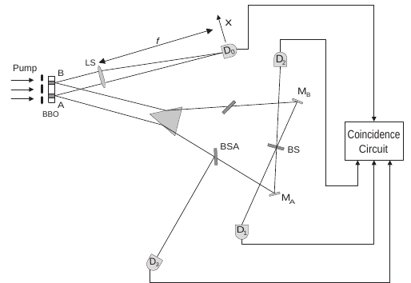

Description:
This my Q&A page, I will record my inspirations and thoughts here.
And currently, due to time limit, this page doesn't support mobile version well
-- 2019.12.9
Q & A - 2019.12.9
tags: QM 能量角动量守恒 系综
Ques:
如果角动量的守恒也不能保证的话，就没有所谓纠缠了
不妨考虑自旋耦合形成的纠缠，相当于处于总角动量z分量的本征态，一般来说并不会破会其处于该本征态的状态，但是比如我探测先探测总角动量的x分量，再重新探测z分量呢？是否会改变？（这应该可以通过并不复杂的计算解决）
其他方式呢？比如突然改变外界的电磁场？是否会局部破会纠缠呢？
Ans:
Q & A - 2019.12.4
tags: QM DCQE SPDC
